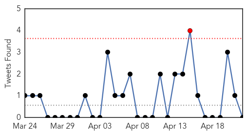
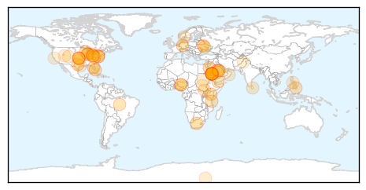

Bubonic Plague
30-Day Web Trend
3 alerts, 0 warnings
30-Day Twitter Trend
0 alerts, 0 warnings

Article Locations

Article Confidences

Top Articles:
-
No articles found for Apr 22, 2014
Top Tweets:
-
No tweets found for Apr 22, 2014
Unknown
30-Day Web Trend
0 alerts, 0 warnings
30-Day Twitter Trend
2 alerts, 0 warnings

Article Locations
Article Confidences

Top Articles:
- 0.995
- Sharp Rise In MERS Cases May Mean The Virus Is Evolving
- 0.995
- The Henry J. Kaiser Family Foundation
- 0.992
- Saudi health minister sacked as MERS toll rises
- 0.991
- Saudi health minister sacked as MERS toll rises
- 0.991
- Middle East Respiratory Syndrome: Virulent fears
- 0.991
- Middle East Respiratory Syndrome: Virulent fears
- 0.988
- 17 New MERS Cases In Saudi Arabia
- 0.973
- Health authorities on alert over MERS virus
- 0.961
- Spread of MERS in Saudi Arabia accelerates with 17 new cases
- 0.950
- Polio Hits Equatorial Guinea, Threatens Central Africa
- 0.948
- Saudi Health Minister Replaced amid Virus Outbreak
- 0.941
- Kenya : Injections’ link to new HIV infections worrying
- 0.924
- News, Weather, Sports, Breaking News
- 0.917
- Chicago Tribune
- 0.917
- Chicago Tribune
- 0.917
- Chicago Tribune
- 0.917
- Chicago Tribune
- 0.917
- Chicago Tribune
- 0.917
- Chicago Tribune
- 0.917
- Chicago Tribune
- 0.917
- Chicago Tribune
- 0.917
- Chicago Tribune
- 0.896
- Saudi health chief fired over MERS
- 0.866
- Russia says Ukraine must urgently implement Geneva deal
- 0.866
- Medvedev says Russia seeking to diversify gas exports
- 0.866
- About 55 al Qaeda militants killed in Yemen air strikes on Sunday
- 0.864
- Better climate data could help Tanzania curb malaria
- 0.858
- 179 Million Cases of Acute Diarrhea in US Each Year, Most Preventable
- 0.838
- 11 OFWs in Central Mindanao under close monitoring for MERS
- 0.818
- Study: Antibiotic-Resistant MRSA ‘Superbug’ Found In US Homes « CBS Atlanta
- 0.799
- Saudi Arabia makes confidence-building move on Mers
- 0.770
- Illness Linked to Oysters Is on the Rise According to the Latest Food Safety Progress Report
- 0.753
- FG wants African disease control centre in Nigeria
- 0.691
- U.S. Rep. Capito Seeks More Details about Health Impacts of MCHM
- 0.673
- Precautions help keep piglets virus-free
- 0.663
- Study IDs Surgical Patients at Risk of Dangerous Lung Disorder
- 0.659
- Delta Dental pairs with FHCHC
- 0.647
- Health Ministry to review medical facilities’ licenses
- 0.636
- Upgraded Record Keeping Helps Save Lives in Sri Lanka
- 0.625
- Hantavirus case reported in Garfield County
- 0.622
- Minority Populations in U.S. Hit Hard by High Blood Pressure, Kidney Disease,... -- COLUMBUS, Ohio, April 22, 2014 /PRNewswire/ --
- 0.575
- Oman Ministry of Health medical staff upbeat over salaries
- 0.559
- Children face water shortages in Bentiu, S.Sudan
- 0.556
- South Sudan warning: respond to humanitarian crisis now or face a larger catastrophe later
- 0.555
- Children with IBS at Increased Risk for Celiac Disease
- 0.555
- University of Utah software successfully identifies diseases with unknown gene mutations in three separate cases
- 0.552
- Can Mesothelioma Be Genetic?
- 0.551
- UNICEF: Desperate water shortages facing children in Bentiu, South Sudan
- 0.549
- Applying math to biology: Software identifies disease-causing mutations in undiagnosed illnesses
- 0.527
- Software Identifies Gene Mutations in 3 Undiagnosed Children
Showing top 50 articles...
Top Tweets:
- 0.565
- Sharp rise in MERS cases may mean the virus is evolving! http://t.co/k837sK2z7z